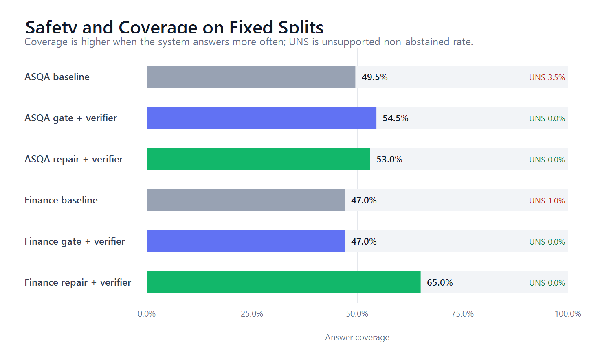
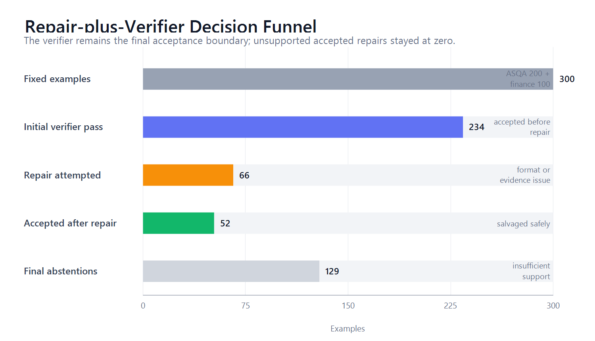

Abstract: Retrieval-augmented generation systems can produce answers with citations that appear authoritative even when the cited passage does not support the claim. This project builds a local citation-grounded RAG pipeline and evaluates whether deterministic verification plus one-step evidence-only repair can improve useful answer coverage without accepting unsupported citations. On a fixed split of 200 ASQA examples and 100 synthetic finance questions, the best 3B repair-plus-verifier system keeps unsupported non-abstained answers at 0.0%, improves finance exact-answer accuracy from 62.0% to 80.0%, and improves ASQA short-answer coverage from 26.1% under verifier projection to 33.5%. A generated distractor stress test also keeps unsupported accepted answers at 0.0%.
RAG is commonly used to make LLM answers auditable by attaching source citations. A dangerous failure mode is citation hallucination: the model gives a fluent answer and appends a citation marker even though the cited passage does not support the claim. The original project proposal targeted deterministic citation enforcement through inference-time grounding signals. The final implementation keeps that goal but shifts toward a fully reproducible local pipeline: deterministic generation, hybrid retrieval, attention-gate instrumentation, a deterministic verifier, and an evidence-only repair loop.
The project uses two complementary evaluation sources. ASQA is used as a bounded local-corpus citation task with 200 fixed examples. A synthetic finance dataset contains 100 fixed questions over fictional disclosures and supports exact deterministic checks for company, fiscal period, metric type, numeric value, and cited passage ID. The project also includes a generated distractor stress test in which each prompt receives one additional plausible but irrelevant fourth passage.
The implementation is a local RAG pipeline. Retrieval combines dense BGE embeddings with BM25 ranking. The generator uses deterministic Qwen2.5-Instruct models. Every factual sentence must end with citation markers such as [P1]. Four systems are compared: baseline RAG, gate-only attention tracing, gate-plus-verifier projection, and repair-plus-verifier. The repair system generates an answer, verifies it, attempts one evidence-only repair when needed, verifies again, and otherwise outputs INSUFFICIENT_SUPPORT.
| System | Data | N | Cov. | UNS | Abs. |
|---|---|---|---|---|---|
| Baseline 3B | ASQA | 200 | 49.5 | 3.5 | 47.0 |
| Gate 3B | ASQA | 200 | 54.5 | 2.5 | 43.0 |
| Gate+Ver. 3B | ASQA | 200 | 54.5 | 0.0 | 45.5 |
| Repair+Ver. 3B | ASQA | 200 | 53.0 | 0.0 | 47.0 |
| Repair+Ver. 7B | ASQA | 200 | 42.5 | 0.0 | 57.5 |
| Baseline 3B | Fin. | 100 | 47.0 | 1.0 | 52.0 |
| Gate+Ver. 3B | Fin. | 100 | 47.0 | 0.0 | 53.0 |
| Repair+Ver. 3B | Fin. | 100 | 65.0 | 0.0 | 35.0 |
| Repair+Ver. 7B | Fin. | 100 | 0.0 | 0.0 | 100.0 |
Cov. = answer coverage; UNS = unsupported non-abstained; Abs. = abstention. Values are percentages.

The best system is repair-plus-verifier 3B. Compared with gate-plus-verifier, finance exact accuracy improves from 62.0% to 80.0%, finance answer coverage improves from 47.0% to 65.0%, and abstention decreases from 53.0% to 35.0%. On ASQA, answer coverage remains close to verifier projection, while short-answer coverage improves from 26.1% to 33.5%.
| Data | Model | Attempts | Saved | Salvage | UAR |
|---|---|---|---|---|---|
| ASQA | 3B | 24 | 11 | 45.8 | 0 |
| ASQA | 7B | 49 | 11 | 22.4 | 0 |
| Finance | 3B | 42 | 41 | 97.6 | 0 |
| Finance | 7B | 59 | 44 | 74.6 | 0 |
UAR = unsupported accepted repairs. No accepted repair was unsupported.

The generated distractor stress test adds a fourth irrelevant passage. Repair-plus-verifier 3B remains robust: ASQA obtains 55.0% answer coverage with 0.0% unsupported non-abstained answers, and finance obtains 85.0% exact accuracy with 0.0% unsupported non-abstained answers. This is additional robustness evidence, not a replacement for the fixed split.
The strongest conclusion is narrow but useful. Verifier-bounded repair improves answer usefulness while preserving citation safety in this local setup. However, the ASQA verifier is a deterministic proxy rather than a human factuality audit. It checks citation structure and explicit anchors, but it does not prove complete semantic faithfulness. The finance dataset is synthetic, so it is a controlled stress test rather than real financial evidence. The 7B repair model was much more conservative than 3B, especially on finance, where it abstained on all fixed examples.
This project demonstrates a practical pattern for safer local RAG. A deterministic verifier can turn unsupported cited answers into explicit abstentions, and a one-step evidence-only repair loop can recover some supported answers without weakening that safety boundary. The best 3B repair-plus-verifier system achieves 0.0% unsupported accepted answers on the fixed split, improves finance exact accuracy by 18 percentage points, and remains safe under a generated distractor stress test.